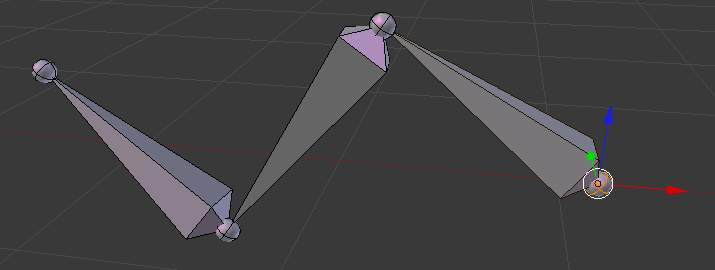
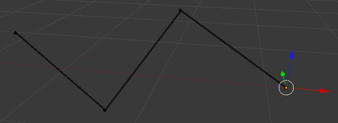
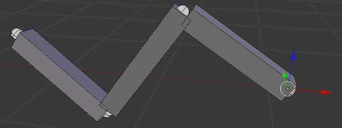
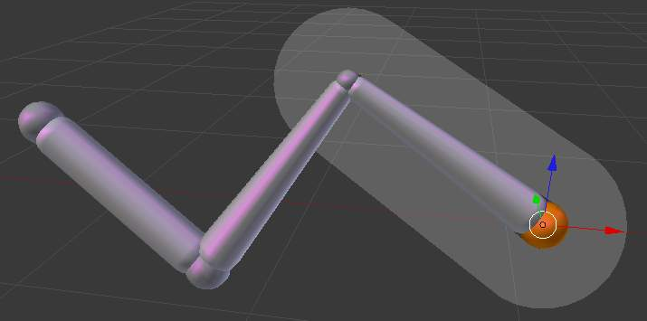
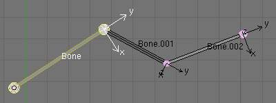
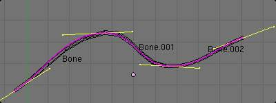
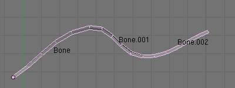

简介¶
{kind=link}
The elements of a bone.
Bones are the base elements of armatures.
They have three elements:
- the “start point” named root or head,
- the “body” itself,
- and the “end point” named tip or tail.
With the default armature in edit-mode, you can select the root and the tip, and move them as you do with mesh vertices.
Both root and tip (the “ends”) define the bone by their respective position.
They also have a radius property, only useful for the envelope deformation method (see below).
Bones Visualization¶
Bones can be visualized in various ways: Octahedron, Stick, B-Bone, Envelope and Wire. Custom shapes can be used, too!

Octahedral bone display. |

Stick bone display. |

B-Bone bone display. |

Envelope bone display. |
{kind=link}
{kind=link}
{kind=link}
{kind=link}
Since armatures are made of bones, you will find more about this when we’ll talk about Armatures Visualization.
Activating Axes checkmark on the Armature/Display panel, will show local axes for each bone’s tip. The Y axis is always aligned along the bone, oriented from root to tip. So, this is the “roll” axis of the bones.
{kind=link}
The Bone tab.
Bones properties¶
When bones are selected (hence in 编辑模式 and 姿态模式), their properties are shown in the Bone tab of the Properties editor.
This shows different panels used to control features of each selected bone; the panels change depending on which mode you’re working in.
Bones Rigidity¶
Even though bones are rigid (i.e. behave as rigid sticks), they are made out of segments. Segments are small, rigid linked elements that can rotate between each other. By default, each new bone has only one segment and as such it cannot “bend” along its length. It is a rigid bone.
You can see these segments in 物体模式 and in 姿态模式, and only if bones are visualized as B-bones; while in 编辑模式 bones are always drawn as rigid sticks. Note that in the special case of a single bone, you cannot see these segments in 物体模式, because they’re aligned.

An armature of B-Bones, in 编辑模式. |

The 贝塞尔曲线 superposed to the chain, with its handles placed at bones’ ends. |

The same armature in 物体模式. |
{kind=link}
{kind=link}
{kind=link}
When you connect bones to form a chain, Blender calculates a 贝塞尔曲线 passing through all the bones’ ends, and bones’ segments in the chain will bend and roll to follow this invisible curve.
There is no direct access to the curve. It can only be controlled by some extent using bone properties, as explained in the editing pages.
In Fig. An armature of B-Bones, in 编辑模式. we connected three bones, each one made of five segments. These are B-bones but as you see, in 编辑模式 they are shown as rigid elements. Look at Fig. The same armature in 物体模式., we can see how the bones’ segments smoothly “blend” into each other, even for roll.
Of course, a geometry influenced by the chain is smoothly deformed according to the 贝塞尔曲线! In fact, smooth bones are an easy way to replace long chains of many small rigid bones posed using IK...
However, if the chain has an influence on objects rather than geometry, the segments’ orientation is not taken in account (details are explained in the skinning part).
When not visualized as B-Bone s, bones are always shown as rigid sticks, even though the bone segments are still present and effective (see skinning to ObData).
This means that even in e.g. Octahedron visualization, if some bones in a chain have several segments, they will nonetheless smoothly deform their geometry...
Bones Influence¶
Basically, a bone controls a geometry when vertices “follow” the bone. This is like how the muscles and skin of your finger follow your finger-bone when you move a finger.
To do this, you have to define the strength of influences a bone has on a certain vertex.
The simplest way is to have each bone affecting those parts of the geometry that are within a given range from it. This is called the envelope technique, because each bone can control only the geometry “enveloped” by its own influence area.
{kind=link}
A bone in Envelope visualization, in 编辑模式.
If a bone is visualized as Envelope, in 编辑模式 and in 姿态模式 you can see the area of influence, which depends on:
- the distance property
- the root’s radius and the tip’s radius.
{kind=link}
Our armature in Envelope visualization, in 姿态模式.
All these influence parameters are further detailed in the skinning pages.